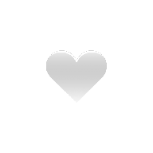
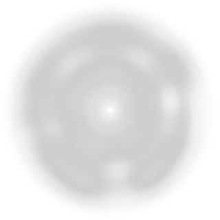
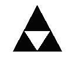
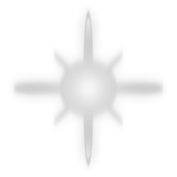
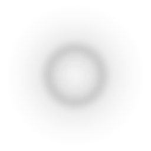

光塔 light_tower
被点亮时展开一圈光。同一座塔可以反复点亮，但每被怪物撞一次就暗一档，最多五档；靠近它还会回一点血。
神之倒三角 · TapTap 聚光灯 2024
每个人的生活都缺了一点光。
你可能找不到那一点光，
但你会想起来，为什么少了它。
I · 序章
Light，光。每个人的生活都缺了一点光，尽管所有人都确实活着，但是，说真的，你不觉得你也缺了一点光吗？
遗憾的是，我们已经找不到那点光了。更遗憾的是，即便你完全通关 LightingForYou 的14 个胡乱设计的关卡，并且成功解锁14 个隐藏的故事，你也不会从中找到那一点光。
不过还好，并不是一无所有。至少你可能在某一关突然想起来些东西，比如说，为什么你会少了这一点光。
LightingForYou。
II · 微弱视野
把光挪过去，黑暗才会让开。
在游戏里，你几乎什么都看不见。
只有一粒小小的光，跟着你走。
你得靠它，一寸一寸地，把黑暗认出来。
移动指针或按住拖动，照亮这段文字
III · 光量
主菜单的 Volume 按钮循环切换五档。光晕的颜色变了，BGM 的音量也跟着变——越亮，越难走。
IV · 机关
都是你在一小圈光里撞见的东西——还有你自己。有些会给你光，有些会把它打掉一档。
light_tower被点亮时展开一圈光。同一座塔可以反复点亮，但每被怪物撞一次就暗一档，最多五档；靠近它还会回一点血。

light_heart捡起来就多一颗心，然后消失。黑暗里最温柔的东西。
enemy每隔约 2.5–3.5 秒朝你射一颗弹丸，方向带 ±30° 的随机偏移。弹丸飞 30 秒后自行消散。
ghost不断朝你加速飘来，碰到就造成两点伤害——比其他东西疼一倍。它和「敌人」共用同一张贴图，靠 PointLight2D 与 Float 浮动区分：同一个黑剪影，一个是原地不动地放弹，一个是拖着光晕贴过来。

hole踩进去会把你抛到另一个位置，同时回一点血。第 13、14 关全靠它在黑暗里挪动。

key / door捡到钥匙会改变你身上的颜色，最多攒 6 把；撞上门就自动消耗一把，把门打开。
同一张 key_door.png，两个物件：钥匙缩到 0.5 倍、上下翻转、轻轻浮动；门放到 1.65 倍、modulate 压到近黑，还带遮光体——所以门在黑暗里只剩一个轮廓。
star靠近时才会显形。碰到它，这一关的隐藏故事就被记下来了。

end在它里面待满 3 秒才算过关。想拿星星，就得在终点和星星之间做选择。

player你自己就是那一点光。本体用 circle_05，外面再套一层 star_05 做光晕——所以你走到哪，哪才亮。

ball敌人吐出来的那一颗。飞得很慢，但会一直飞——30 秒后才消散，所以场上会越积越多。
wall / hide同一张 wall.png 平铺贴图，两种用途：墙是带碰撞体与遮光体的实心块，光穿不过去；掩体则薄一层，可以躲进去。
你在页面上看到的那层暗纹底，就是这张图以 26px 平铺出来的。
V · 十四关
十四盏灯，十四段独白。往下滚，它们会一个一个亮起来。点开「隐藏故事」，读它。
LEVEL 01 / 14
灵光一闪，诸般皆有
你好，也许，你也不好。同我一样正在经历？不过没关系，请先听听我的故事吧。我刚才诞生在了这个世界，这样告诉你能理解吗？。但就是现在这样，周围都是黑暗与高墙，没人告诉我会出现这样的情况。我什么都没准备，就这样赤裸裸地诞生。说实话，我有一点怕，我都不知道这是哪里。同宇宙的遥远星系？异世界的幽深秘境？我不知道，怎么说呢，刚才发生的一切都太奇妙。就有点像，像刚刚发生了什么，然后整个世界便在我周围瞬间展开。
LEVEL 02 / 14
静下来，微光如呼吸
其实，我已经记不得那时候的事了。你别笑，我要开始思考了。尽管我仍像个襁褓中的婴儿，或者就是？但是我仍然要做点什么才对。你觉得我能干点什么，也许我真能做点什么，但是没办法，我做不到。我感受到了，有东西在暗中窥探我，我不敢出声，我的脉搏伸缩，我的心跳鼓动，我的呼吸如微光般虚弱，可笑。我现在只能爬，你懂吗，我不能跑，不能走，甚至不能站起来，那东西就在那儿盯着。
LEVEL 03 / 14
好想吃，好想吃，好想吃
有人常常想为我庆祝，我不明白人们在高兴什么，但我喜欢这个时候。他们将鸡蛋塞进我的手中，微微热，壳中仿佛尚有一个宇宙。其实根本没有人在乎他们将宇宙交给了我，你也应该知道吧，我也不在乎。蛋壳中的宇宙在我手中逐渐冷却，仿佛死亡，或者早已？其实，我也很难想象，还有什么比这更好的呢？总有东西是死的，就在另一些东西诞生的时候，对吧？
LEVEL 04 / 14
我刚好有一只，借你玩玩
其实还有一个人，他几乎和我同时诞生，他甚至和我经常遇见。我不知道他的名字，毕竟每个人遇到的他都不希望。所以我为什么还要跟你说起他的事呢。可能你已经猜到了，如果你足够聪颖的话，哈哈。好吧，有点难以启齿，但是我的确想再去他家玩。我从未见过的新鲜，我羡慕已久的幻想，他都有，甚至还者别的什么。我不知道还应该向你怎么进一步解释，有的东西很难用语言去形容，当然，这些东西也在他的手里。
LEVEL 05 / 14
他们讨厌我，我也讨厌他们
有时候你不得不承认，我也不得不承认，这里缺少什么东西。怎么样，有点伤心了吧。为什么所有人的合在一起？为什么你总在世界之外？鸟在飞，鱼也是。他们望着我，到底在看什么？我没有在表演节目，只是我们不太一样。他们常常不懂我要做什么，反过来也一样。这很纠结，我很难受，鱼也是。这导致我不得不思考另外一些问题，你也是。
LEVEL 06 / 14
我想静静，但母亲电脑不让
正当我以为一切都已经步入正轨，往往这是却出了些差错。小关系，尽管这确实出乎我的意料，但这也在情理之中。我正好趁这机会待待，啊，好像不让这样。那好吧，纵然，我也得离开。不过即便如此，我仍幻想出了巨兽，它一手拔起树木，一脚踩碎房屋。它刚张嘴瞄准太阳，天就黑了。天黑的话会很黑，没有光它就消失了，我又回到刚被踏平的房屋。
LEVEL 07 / 14
小时候的奇迹轻而易举
我早就给你说过，我小时候特别聪明。所有人都在夸我，不是我编造，这是事实。你最好还是不要以我现在的情况来推断过去，这很不对。尽管不断有人超过我，取代我。夸赞我的人不再夸赞，诋毁人的人前来诋毁。嗯？怎么了，露出这样的表情。好啦，放宽心。追不上我的永远追不上我，我追不上的我永远追不上。哈哈，这不就好了吗。
这一关整张地图会缓缓自转；四个角各有一座光塔，远处还有四座星之塔，两边全部点亮才算数。计时器 8 秒后触发转场。
LEVEL 08 / 14
你知道我说的不止是海
也许你已经看出来了我的语言变得成熟，也许没有。没关系，每个人都会长大，慢慢来。等到时候，你就会像发现新世界一样发现新世界。有人知道有人喜欢，就送了。有人知道有人不喜欢，还是送了。有人喜欢，就收下了。有人不喜欢，还是收下了。像这样的事多得很，没事，不用担心，你还年轻。现在你做好你现在该做好的事就可以了。对了，你喜欢海吗？下次可以一起去。
LEVEL 09 / 14
尽管仍然年轻，但这也说不准
你知道，有些东西这样做不好，但你还是这样做了。可是，好奇怪啊，为什么呢。你都觉得不好了，为什么还要做呢？你都这样做了，为什么还觉得不好？好难回答的问题啊！不过值得庆幸，早就有人告诉我们并不是所有问题都能被证明。总之，你现在能随便做你曾经梦寐以求想做的事了，爽吧？
LEVEL 10 / 14
山不过来，我便过去
我已经说不下去了，几乎所有人都存在于过去，只有少部分人能活到将来。我认为我现在和你谈那些还为时过早，但就给我们的时间确实不多了。镜子，有吗？没有。那我该如何向你演示镜中世界呢。像这样？你看懂了吗？我不知道你有没有真的明白，但是，说真的，时间不够了。根据同样的定理，你已经度过的时间同余下的所有时间一样有价值。
LEVEL 11 / 14
通道或者隔阂,这是一个问题
有时候，不只是我，你也必须要开始好好想想了。当你结束了你的一天，你会行走在混黑的路上，无名光塔偶尔闪烁，难以彻底点亮周围。这样，走着，直到，尽头。你在这里碰到了一堵墙，很简单，墙挡住你。你听见墙后传来熟悉的声音，你看不见墙后是否忙碌的身影。你找了找，发现了门。门就那样长在墙上，也不怎么动。所以，你会开门吗？
LEVEL 12 / 14
在过去，预言家看到了未来
许多年之后，面对生活，你将会回想起那个遥远的下午。而现在，没有一点点情感。你不知道时间在过去到底发生了什么，那时候的欢喜到底在高兴什么。对，你不知道时间在过去发生了什么，现在又为什么感受不到一丁点波动。空洞的，麻木的，无聊的，灰暗的，机械的。你不敢多说什么，藏着掖着，躲着看着。红的绿的蓝的，终于还是晃花了你的眼睛。
LEVEL 13 / 14
龙不吃青草与肉，蛇只吃自己的手
那么现在呢，无边的黑暗不在黑暗，它同白色一样光明。暗中的一切仍被隐藏，就好像最开始一样。世界似乎也并没有因为你的作为而改变，你却早已变得百孔千疮。你望着眼前，你只能这样，你的神经衰退，你的行动缓慢。请你原谅我的视角看来，正如我最初说的那样。不过你究竟还记得多少，毕竟那也是好多年前的事了。没关系的，没关系的，现在你也不必为什么事而担心了，剩下的时间好好享受。
这一关四个传送穴按顺序编号 1–4，每次传送都会把整张地图旋转 90°。踩出 1-1-1-3 的顺序会解锁隐藏故事。
LEVEL 14 / 14
另一位观察者阻止了你的访问
你终于是穿过了无数，来到此时此地。也许你仍然听不懂我在说什么，没关系，这么多次，我已经习惯了。观察者跟我说你终于完成了所有，我不知道，因为另一位观察者说你又没有。做还是不做，这是一个问题。有时候不只有你在疑惑，我也搞不懂为什么要这样设计，但是现在的情况就已经是现在了，要不将就一下？你要知道，诚然的事物固然稳定，但是，随机，也是一个很大的乐趣！
这一关102 个传送穴，每次传送都把地图旋转 90°。开发者自己都说「不保证这关有解」。
十四关 · 十四段独白 · 全在这里
VI · 手感
VII · 开发者的话
很高兴你能玩我们做的游戏（如果还没完就赶紧去玩啊楞着干嘛 bushi）。总之，你现在看到了我们做到的游戏。
我很难给你描述游戏的内容，游戏的本质和游戏的目的。有时候，甚至连我们自己都弄不清楚这些问题。
也许，你已经玩过了我们的游戏，也许没有。但无论如何，我们的确是想在游戏中表达一些什么的。也许，你也已读出我们想表达的内容，但这不一定对，我们欢迎你分享你的所见，所感。
这段话是 Gove 写的，但我仍想在这里写下 EumlanK。
VIII · 实机画面
在黑暗中慢慢地探索，发现惊喜，刚上手需要摸索一会儿，可以适当增加说明和剧情，可玩性较高。 TapTap 玩家 行远自迩
开发者
神之倒三角
剧情 / 策划 / 程序 / 制作
Gove
音乐音效
Eumlank
引擎
Godot 4.6
版本
1.1.0 · 2024.12.16
平台
TapTap · 安卓 / iOS
TapTap 聚光灯 2024 作品，14 关的旅程已经开始。